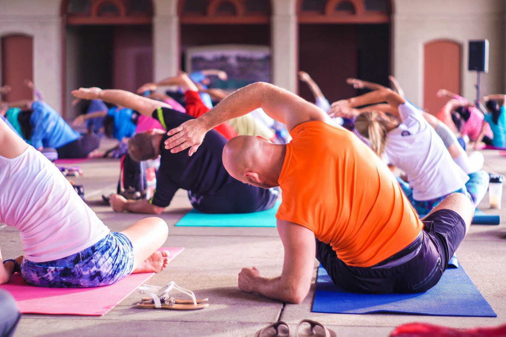
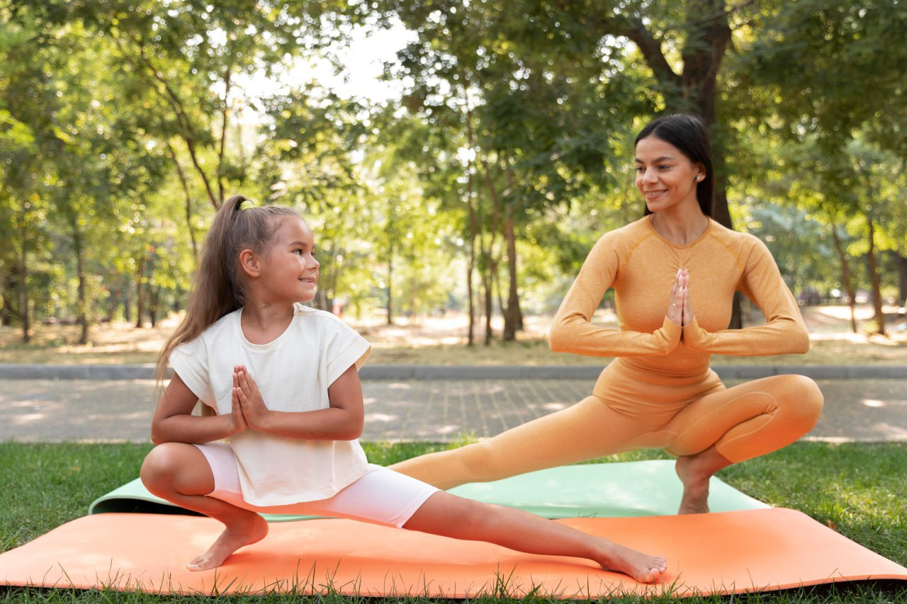

Our Classes

Yoga Classes
Training Classes

Meditation Classes
Fitness Classes
Outdoor Classes

Helping you build a strong and flexible body and mind through yoga
Our dedicated customer support team is here to assist you every step of the way. We understand that each customer is unique, and we take the time to listen attentively to your specific requirements, offering personalized solutions to address your individual needs.
we are dedicated to creating a nurturing space where individuals can cultivate strength, flexibility, and inner harmony. Join our community and embark on a transformative yoga journey that empowers you to live a more balanced and fulfilling life.
Witnessing the transformative power of yoga in our students has been the most rewarding aspect of our experience. We have seen individuals discover newfound strength, overcome challenges, and find inner peace through their dedicated practice. This reaffirms our belief in the profound impact yoga can have on one's life.
Our team is a group of passionate individuals who love what they do. Each member brings their unique skills, expertise, and creativity to the table, working together with a shared sense of purpose. It is this passion that drives us to continuously strive for excellence in everything we undertake.
Follow these above steps for a month and you’d have formed meditation as a daily habit.
Yoga combines physical postures (asanas), breath control (pranayama), and meditation to promote physical strength, flexibility, and mental well-being. It improves balance, reduces stress, and enhances overall body awareness. Resources for learning yoga include attending classes at yoga studios, online tutorials, and books specifically focused on yoga practice.
Body scan and progressive muscle relaxation techniques involve systematically relaxing and releasing tension in different parts of the body. These practices promote deep relaxation, reduce muscle tension, and increase body awareness. Resources for learning body scan and progressive muscle relaxation techniques include guided audio recordings, relaxation-focused apps, and books on relaxation exercises.
Mindfulness and meditation involve training the mind to focus on the present moment, cultivate awareness, and develop a non-judgmental attitude. These practices reduce stress, enhance emotional regulation, and improve overall mental well-being. Resources for learning mindfulness and meditation include mindfulness apps, meditation retreats, guided meditation recordings, and books written by meditation experts.
Breathwork techniques involve conscious control of the breath to promote relaxation, energy balance, and emotional well-being. Different breathwork techniques include deep diaphragmatic breathing, alternate nostril breathing, and rhythmic breathing patterns. Resources for learning breathwork include workshops, online courses, and books focused on breathwork exercises and techniques.